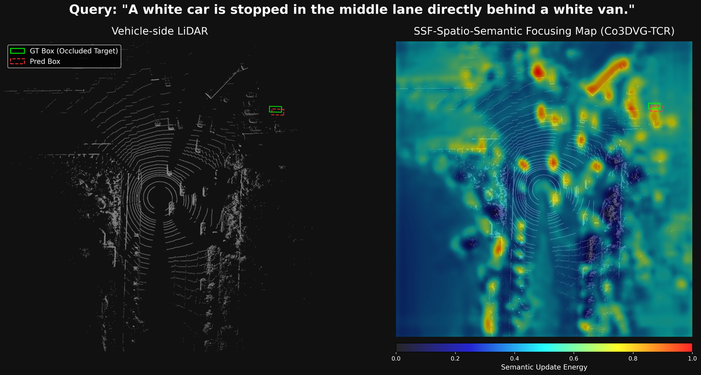

Figure a1. The TCR Attention on Sensory Evidence(right) demonstrates that our TCR module does not hallucinate features. Instead, it grounds its spatial reasoning on actual sensory evidence from the surrounding visible environment to reason about occluded regions. For example, when the target object is completely invisible, the TCR attention does not fall on the empty space of the GT Box (Occluded Target). Instead, it relies on actual sensory evidence, focusing primarily on the features of the visible surrounding object layouts.

Figure a2. The SSF Spatio-Semantic Focusing Maps(right) demonstrate that by leveraging text-conditioned contextual priors, the model effectively filters out distant background noise. For example, the SSF module successfully focuses on the objects surrounding the GT box (occluded target), resulting in significantly stronger activation in this area, as attention concentrates on the target region and context objects.
Figure a3. The predicted heatmap comparisons show that the Co3DVG-V without TCR module yields blurry and ambiguous predictions under severe occlusion, while Co3DVG-TCR generates sharper and more deterministic confidence distributions. For example, Co3DVG-V fails to localize the target, while Co3DVG-TCR successfully localizes the target, and its predictions closely align with the cooperative upper-bound Co3DVG-C, even when the target has minimal geometric evidence.